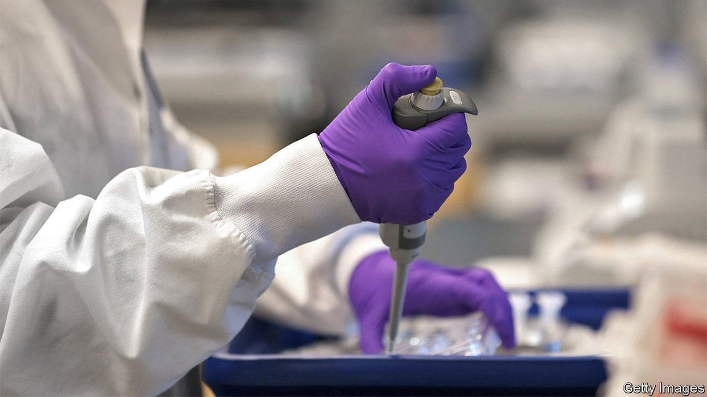
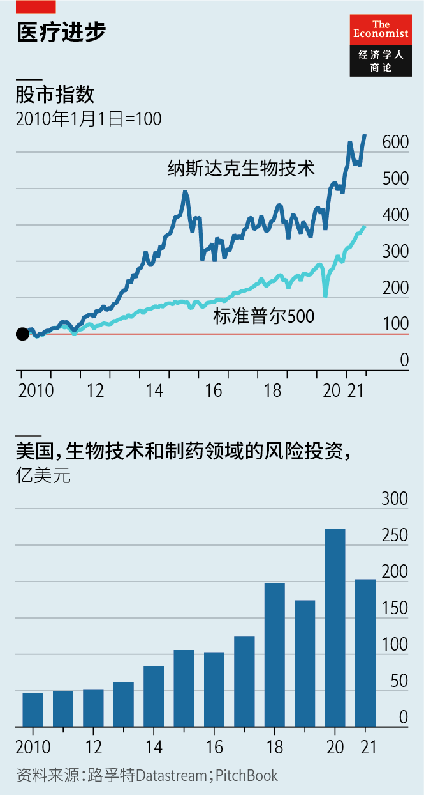
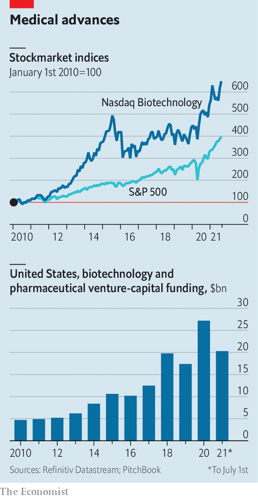

2021-09-05T13:39:50+00:00
制药
美国的生物技术蓬勃发展
疫情凸显出先进新药及其研发公司的光明前景
一九〇八年，阿什顿阀门公司（Ashton Valve Company）在马萨诸塞州剑桥市的宾尼街（Binney Street）和第一街（First Street）的交汇处盖了一间工厂。它是那个年代的高科技产业，生产压力计、阀门、哨笛和钟表等小设备来帮助降低蒸汽锅炉爆炸和致死的风险。在刚刚过去100年后的2010年，阿什顿废弃已久的厂房进驻了另一家拯救生命的科技公司——莫德纳（Moderna）。
过去一年里，这家炙手可热的生物技术公司已经成为抗击新冠肺炎的代名词。与美国制药巨头辉瑞（Pfizer）和德国创业公司拜恩泰科（BioNTech）联合开发的类似疫苗一样，该公司自行开发的mRNA疫苗拯救了成千上万人的生命。莫德纳的成功也引发了人们对美国生物技术产业的关注。这个产业主要集中在剑桥市，这里是哈佛大学和麻省理工学院的所在地，是生物技术圈目前最接近硅谷的地方。
这个产业势头正猛。自2010年以来，追踪纳斯达克上市生物技术公司的指数的市值已经增长了四倍（见图表），指数中的公司数量也翻了一倍多，达到269家。从2011年到2020年，生物技术创业公司在美国IPO的融资额从40亿美元激增至650亿美元。今年到目前为止，风险投资家已向制药和生物技术公司投入逾200亿美元，接近去年全年创纪录的270亿美元。
剑桥市到处可见起重机和新建筑，从外面看索然无味，但里头进行着的可都是激动人心的科学研究。在毗邻的波士顿市，新实验室在改造后的海港区（Seaport）不断涌现。实验室场地的租金据称达到每平方英尺160美元，可能是美国除一楼店面外最昂贵的商业地产。
这个行业的扩张速度放在10到15年前是不可想象的，风险投资公司Atlas Venture的让-弗朗赛·弗梅拉（Jean-François Formela）惊叹。到处都是新开的公司，弗梅拉的公司所在的楼层里就有。Flagship Pioneering是一家风险投资公司，它指导创业者将有前景的想法转变为能吸引外部投资者的企业，自2013年以来已经孵化了26家公司。它的创始人努巴·阿费扬（Noubar Afeyan，也是莫德纳的董事长）希望从现在开始每年最多能孵化10家公司。
这轮繁荣有几个成因。伦敦的资产管理公司Abingworth聚焦生命科学领域，它的董事长蒂姆·海恩斯（Tim Haines）指出，许多投资者沉浸于“慈善资本主义”的概念：从可能造福社会的产品中赚钱。其他的原因更加理性。据海恩斯估计，处于研发后期的药物中，有64%是由年轻的生物技术公司围绕某项新技术研发出来的，而不是来自像辉瑞这样的大型制药公司（它们经常与拜恩泰科这样的小型生物技术公司合作，或者收购它们，以充实自己的研发计划）。
这些技术中有许多本身是近年两类进展的结果：一是细胞和基因疗法的发展，新技术将这方面的研究成果付诸实践；一是确定哪些患者可能从中受益最大。新的资金正涌入开发各种疗法的公司，包括针对癌症、免疫系统或脑部疾病，甚至还有传染病。大家都争相要成为下一个莫德纳，这家公司的市值已从2018年底上市时的50亿美元跃升至1560亿美元。许多公司从开发疗法扩展到了制造相关药物和设备，以期赶上莫德纳。
走过位于熙熙攘攘的宾尼街尽头的莫德纳总部，你很容易忽视这股热潮中的风险。同时拥有生命科学博士学位和管理才能的人实属凤毛麟角。不同于头脑风暴出一款新应用，生命科学研究无法在Zoom上完成。许多绝妙的想法从来没有实现过。那些最终研发成功的疗法往往价格不菲，这让国会的民主党和共和党人都越来越愤怒，并引发了控制价格的呼声。
最大的危险是创业公司的一个常见问题：它们能赚钱吗？纳斯达克生物技术指数中只有六分之一的公司在2020年赚到了钱，其余六分之五的公司总共亏损了330亿美元。宾尼街的“杰出毕业生”、现已搬到海港区的福泰制药（Vertex）从1989年成立后一路亏损到了2017年。莫德纳在上一季度实现了十年以来的首次盈利，而它的股价已经下滑。不过，那些想要模仿它的公司可以稍稍放宽心的是，生物技术领域的投资者是一群很有耐心的人。
2021-09-05T13:39:50+00:00
Pharmaceuticals
American biotechnology is booming
The pandemic has highlighted the promise of clever new drugs—and the firms developing them
IN 1908 ASHTON VALVE COMPANY built a factory on the corner of Binney Street and First Street in Cambridge, Massachusetts. In what was a high-tech industry of the day, it made gauges, valves, whistles, clocks and other gadgets that helped make steam boilers less susceptible to blowing up and killing people. Just over 100 years later, in 2010, another purveyor of a life-saving technology moved into Ashton’s long-abandoned premises: Moderna.
In the past year the biotech darling has become synonymous with the fight against covid-19. Its ingenious mRNA vaccine has, like a similar one developed by Pfizer, an American drug giant, and BioNTech, a German startup, saved millions of lives. Moderna’s success has also brought attention to America’s biotechnology industry, a lot of it centred on Cambridge. Home to Harvard University and the Massachusetts Institute of Technology, it is the closest that the biotech business currently has to a Silicon Valley.
And the industry is booming. Since 2010 an index of biotech firms listed on the Nasdaq exchange has quintupled in value (see chart), and the number of companies in it has more than doubled, to 269. Between 2011 and 2020 the money that biotech startups raised in American initial public offerings (IPOs) ballooned from $4bn to $65bn. So far this year venture capitalists have poured more than $20bn into pharmaceutical and biotech firms, not far from last year’s record tally of $27bn.
Cambridge is filled with cranes and new buildings, dull on the outside but bursting with exciting science within. In next-door Boston new laboratories are going up around the revamped Seaport. Prices for lab space reportedly reach $160 a square foot, perhaps the costliest commercial real estate in America not at street level.
The pace of the industry’s expansion would have been inconceivable 10-15 years ago, marvels Jean-François Formela of Atlas Venture, a venture-capital (VC) firm. Businesses are popping up everywhere, including down the hall from Mr Formela’s office. Flagship Pioneering, a VC firm which guides entrepreneurs from a promising idea to a business that can attract outside investors, has spun out 26 companies since 2013. Its founder, Noubar Afeyan (who is also Moderna’s chairman), hopes to spin out up to ten a year from now on.
The boom has several causes. Tim Haines, chairman of Abingworth, a London-based asset manager focused on life sciences, notes that many investors have been swept up in the notion of “philanthropic capitalism”: making money from products that could benefit society. Other reasons are more hard-headed. According to Mr Haines’s estimates, 64% of drugs in late-stage development are being concocted by youngish biotech companies built around a novel technology rather than by big pharma firms such as Pfizer (which often team up with smaller biotechs like BioNTech, or acquire them, to juice up development pipelines).
Many of these technologies are themselves the result of recent advances in cell and gene therapies, in ways of delivering them, and in identifying which patients they are likely to benefit most. New money is flowing into firms developing treatments for cancer, illnesses of the immune system or the brain, and even infectious diseases. Everyone is vying to be the next Moderna, whose market capitalisation has jumped from $5bn when it went public in late 2018 to $156bn. Many are hoping to emulate it by expanding from developing therapies to manufacturing them.
Walking past Moderna’s headquarters just off bustling Binney Street it is easy to overlook the risks. People with both a PhD in life sciences and managerial nous are a rare breed. Unlike brainstorming the next app, life science cannot be done on Zoom. Many clever ideas never come to fruition. Those that do become therapies often cost a lot, which increasingly angers both Democrats and Republicans in Congress and has led to calls for price controls.
The greatest danger is a common one for startups: can they make money? Only one in six firms in the Nasdaq biotech index did so in 2020. The remaining five-sixths lost a combined $33bn. Vertex, a star graduate of Binney Street that has relocated to Seaport, lost money from its founding in 1989 until 2017. Moderna turned a profit last quarter for the first time in a decade and its share price has slid. Still, its wannabe imitators can take comfort that biotech investors are a patient lot. ■
2021-09-05T13:39:50+00:00
製藥
美國的生物技術蓬勃發展
疫情凸顯出先進新葯及其研發公司的光明前景
一九〇八年，阿什頓閥門公司（Ashton Valve Company）在馬薩諸塞州劍橋市的賓尼街（Binney Street）和第一街（First Street）的交匯處蓋了一間工廠。它是那個年代的高科技產業，生產壓力計、閥門、哨笛和鐘錶等小設備來幫助降低蒸汽鍋爐爆炸和致死的風險。在剛剛過去100年後的2010年，阿什頓廢棄已久的廠房進駐了另一家拯救生命的科技公司——莫德納（Moderna）。
過去一年裡，這家炙手可熱的生物技術公司已經成為抗擊新冠肺炎的代名詞。與美國製藥巨頭輝瑞（Pfizer）和德國創業公司拜恩泰科（BioNTech）聯合開發的類似疫苗一樣，該公司自行開發的mRNA疫苗拯救了成千上萬人的生命。莫德納的成功也引發了人們對美國生物技術產業的關注。這個產業主要集中在劍橋市，這裡是哈佛大學和麻省理工學院的所在地，是生物技術圈目前最接近硅谷的地方。
這個產業勢頭正猛。自2010年以來，追蹤納斯達克上市生物技術公司的指數的市值已經增長了四倍（見圖表），指數中的公司數量也翻了一倍多，達到269家。從2011年到2020年，生物技術創業公司在美國IPO的融資額從40億美元激增至650億美元。今年到目前為止，風險投資家已向製藥和生物技術公司投入逾200億美元，接近去年全年創紀錄的270億美元。
劍橋市到處可見起重機和新建築，從外面看索然無味，但裡頭進行着的可都是激動人心的科學研究。在毗鄰的波士頓市，新實驗室在改造後的海港區（Seaport）不斷湧現。實驗室場地的租金據稱達到每平方英尺160美元，可能是美國除一樓店面外最昂貴的商業地產。
這個行業的擴張速度放在10到15年前是不可想象的，風險投資公司Atlas Venture的讓-弗朗賽·弗梅拉（Jean-François Formela）驚嘆。到處都是新開的公司，弗梅拉的公司所在的樓層里就有。Flagship Pioneering是一家風險投資公司，它指導創業者將有前景的想法轉變為能吸引外部投資者的企業，自2013年以來已經孵化了26家公司。它的創始人努巴·阿費揚（Noubar Afeyan，也是莫德納的董事長）希望從現在開始每年最多能孵化10家公司。
這輪繁榮有幾個成因。倫敦的資產管理公司Abingworth聚焦生命科學領域，它的董事長蒂姆·海恩斯（Tim Haines）指出，許多投資者沉浸於“慈善資本主義”的概念：從可能造福社會的產品中賺錢。其他的原因更加理性。據海恩斯估計，處於研發後期的藥物中，有64%是由年輕的生物技術公司圍繞某項新技術研發出來的，而不是來自像輝瑞這樣的大型製藥公司（它們經常與拜恩泰科這樣的小型生物技術公司合作，或者收購它們，以充實自己的研發計劃）。
這些技術中有許多本身是近年兩類進展的結果：一是細胞和基因療法的發展，新技術將這方面的研究成果付諸實踐；一是確定哪些患者可能從中受益最大。新的資金正湧入開發各種療法的公司，包括針對癌症、免疫系統或腦部疾病，甚至還有傳染病。大家都爭相要成為下一個莫德納，這家公司的市值已從2018年底上市時的50億美元躍升至1560億美元。許多公司從開發療法擴展到了製造相關藥物和設備，以期趕上莫德納。
走過位於熙熙攘攘的賓尼街盡頭的莫德納總部，你很容易忽視這股熱潮中的風險。同時擁有生命科學博士學位和管理才能的人實屬鳳毛麟角。不同於頭腦風暴出一款新應用，生命科學研究無法在Zoom上完成。許多絕妙的想法從來沒有實現過。那些最終研發成功的療法往往價格不菲，這讓國會的民主黨和共和黨人都越來越憤怒，並引發了控制價格的呼聲。
最大的危險是創業公司的一個常見問題：它們能賺錢嗎？納斯達克生物技術指數中只有六分之一的公司在2020年賺到了錢，其餘六分之五的公司總共虧損了330億美元。賓尼街的“傑出畢業生”、現已搬到海港區的福泰製藥（Vertex）從1989年成立後一路虧損到了2017年。莫德納在上一季度實現了十年以來的首次盈利，而它的股價已經下滑。不過，那些想要模仿它的公司可以稍稍放寬心的是，生物技術領域的投資者是一群很有耐心的人。